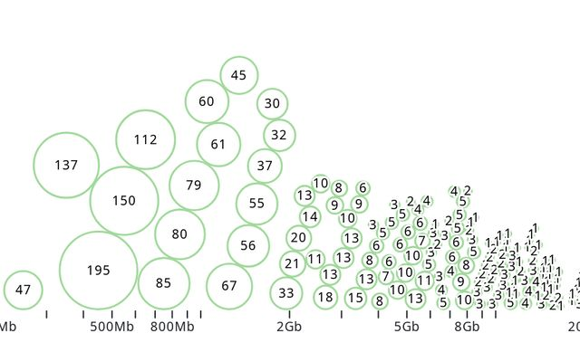
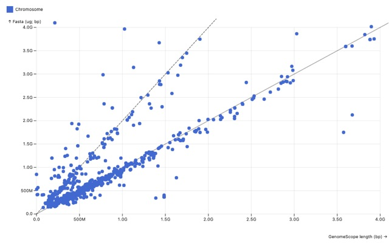
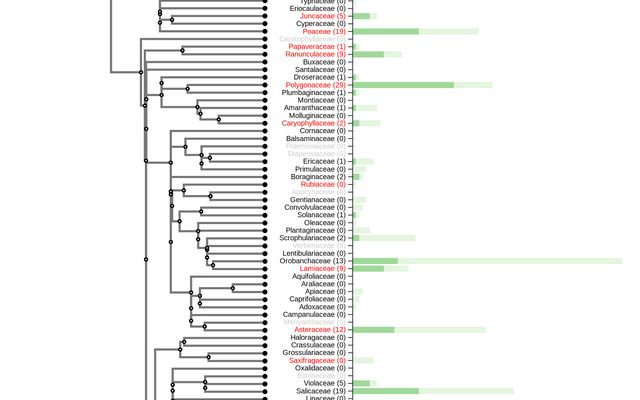
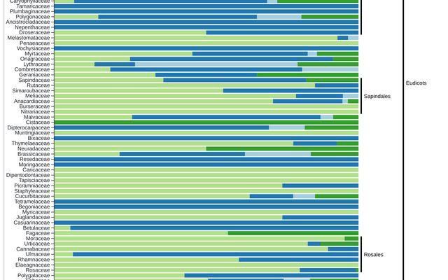
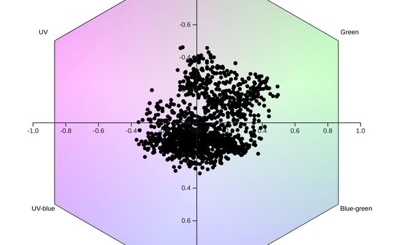

Figures
Data you can explore
Many of our papers come with interactive figures, built in D3 with our own phylogeny library, lwPhylo, and hosted on Observable. Hover, zoom and dig into the data behind them.
Featured figure
Plant mitochondrial assembly complexity
Why are some plant mitochondrial genomes easy to assemble while others shatter into tangled, multipartite graphs? Mapping complexity onto the phylogeny shows it is concentrated in particular lineages, and tracks genome size and repeat content.
From our preprint Conserved genes, discordant structure: a pangenomic view of plant mitochondrial genome evolution (bioRxiv, 2026), covering over 300 de novo assembled mitochondrial genomes. Drawn with D3 and lwPhylo.
Live data
Tracking the Darwin Tree of Life plants

Plant sampling dashboard
Progress of the Darwin Tree of Life plant working group in collecting vascular plants and bryophytes, broken down by group, family and estimated genome size. Updates directly from the collection spreadsheets.
Open dashboard
Genome size across DToL plants
How do assembly lengths compare with k-mer (GenomeScope) estimates and flow cytometry C-values? Points fall on two lines, 1:1 and 2:1, and assemblies mostly sit below their measured 1C content.
Explore the dataMore notebooks
From manuscripts and side projects

Cross-ploidy hybrids across the British flora
Figure 4 of our review on cross-ploidy hybridisation: a family-level phylogeny drawn from the Barcode UK dataset, with bars showing how many hybrids in each family cross ploidy levels versus share them.
Open notebook
Let's talk about seeds!
How are seeds dispersed: by animals, wind, water, or not at all? Every plant family in the Kew Seed Information Database, ordered phylogenetically.
Open notebook
The flower colour spectra
Flowers as a bee sees them: reflectance spectra from the Floral Reflectance Database plotted in bee colour-hexagon space, from UV to blue-green.
Open notebook